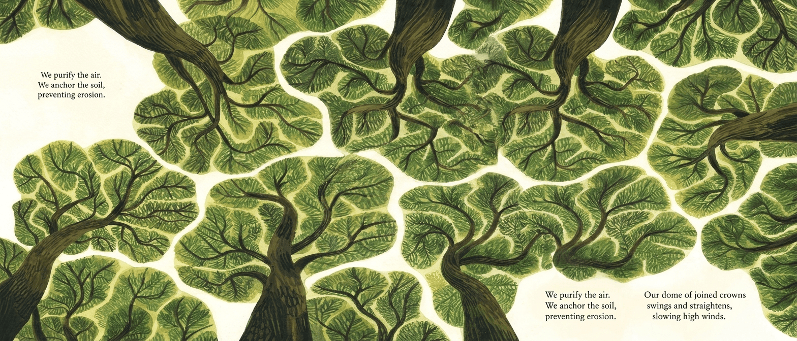
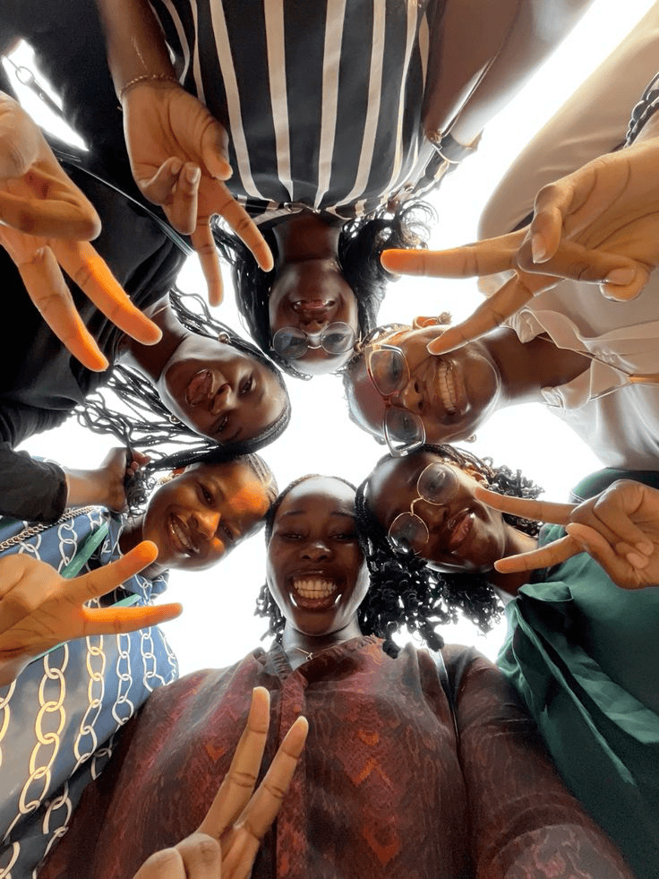
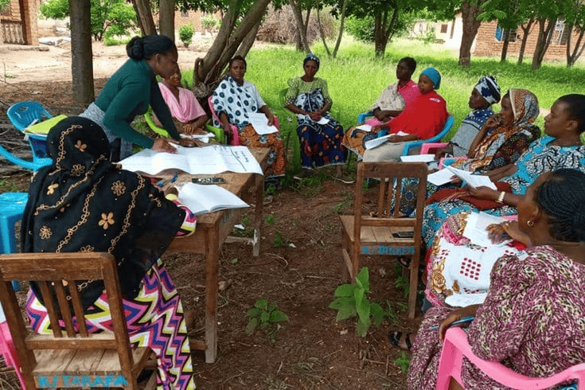

Leadership gives environmental work an owner
When young people lead environmental action, the work has people who feel responsible for it. A tree is far more likely to be looked after when someone has taken it on as theirs.
Leafspire is a youth-led social impact initiative rooted in Kenya. We work with young people and communities on environmental action, youth leadership and wellbeing, because progress on one makes the others easier to sustain.

Climate change and environmental loss can feel too big to do anything about. We start closer to home, with places people know and can look after together.
We support young people and communities to care for the environment through environmental education, tree planting and tree growing, school greening, biodiversity awareness and practical local action. The aim is not a single planting day. It is building the habit of looking after what has been planted, and understanding why it matters.
Related Sustainable Development Goals: SDG 13, Climate Action, and SDG 15, Life on Land.
See how this could reach schoolsYoung people often notice local problems first. What matters is whether they are given a real chance to act on them.
We create opportunities for young people to take initiative, develop leadership, take part in community decision-making and contribute to solutions for local challenges. Leadership here is practical. It means taking responsibility for something real, working with others and seeing it through.
Related Sustainable Development Goals: SDG 4, Quality Education, and SDG 11, Sustainable Cities and Communities.
Find out how young people can take part

Feeling that you belong changes how you take part in everything else.
We promote supportive environments where young people and communities can strengthen social connections, build emotional awareness, take part in positive activities and reach appropriate support. Often it starts with something simple: working alongside other people on something that matters to all of you.
Leafspire is not a clinical or counselling service. Our focus is awareness, connection and participation, and where someone needs professional help, we aim to point them toward appropriate support.
Related Sustainable Development Goal: SDG 3, Good Health and Well-being.
Healthier people, stronger communities and a more sustainable environment lift one another. Point at a statement to see which causes it joins.
When young people lead environmental action, the work has people who feel responsible for it. A tree is far more likely to be looked after when someone has taken it on as theirs.
Being trusted with real responsibility builds confidence and a sense of belonging. People who feel they belong are more likely to take part, and to keep taking part.
Working side by side on a shared place gives people a reason to connect. Green, well-kept spaces can in turn make a community a better place to spend time.
That is why we describe Leafspire's work as three causes and one story.
Two parts of our work show how the causes meet in practice. Both are still being developed, and we describe them as exactly that.
Proposed flagship programme, in development
A school is one of the places where all three causes meet. The proposed initiative would combine environmental education, tree growing and school greening with student leadership and peer connection. We plan to develop and pilot it first in Trans Nzoia County, Kenya, and to shape activities around each school's needs and conditions.
In development
FOMOZY is an app we are developing to encourage people to take part in activities and challenges linked to the Sustainable Development Goals. It is not available yet, and a short survey is helping us shape it.
About FOMOZY and the surveyYoung people, schools, organisations and individual supporters all have a part to play. Pick the way that fits you and start there.
Bring your time and skills to environmental action, school activities and community projects.
See how to volunteerSchools, organisations and environmental partners are welcome to talk to us about working together on these causes.
Start a conversationSee what we are developing, starting with the Leafspire Green Schools Initiative.
View our programmesIf these causes matter to you, your support helps us develop and pilot programmes with schools and communities, and turn plans for environmental learning, youth leadership and connection into practical action.
Donate to LeafspireYou are now part of our community. Expect updates on programmes, events and stories.